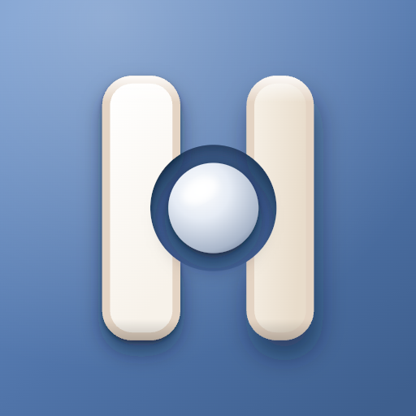

App-ikon · Hengsel Ute · iOS 26
Hengselet, åpnet litt.
To blader og en stift i tre lag. Høyre blad står litt åpent, og stiften ligger fremst. Forhåndsvisningen viser omtrent hvordan iOS flytter lagene og lyset når telefonen vippes. Beveg musen over ikonene.
Lys, mørk, klar og tonet
Størrelser, ved siden av logoen
 1024 (vist 240)1801206029
1024 (vist 240)1801206029På hjemskjermen
Android

Play 512 × 512Valg
- →Høyre blad er 14 % smalere og har en kjøligere toning. Det gir følelsen av ca. 18° åpning uten perspektivtegning.
- →Fasen er to flate farger: en kant i Beige 3 og en flate i Off White. Den ses ned til 60 px.
- →Stiften er Off White på blått i lys modus, og Dusty Blue i mørk modus.
- →Symbolet fyller ca. 64 % av ikonet, slik at H-en kjennes igjen ved 29 px.
- →Lagene til Icon Composer er flate. Skygge, glans og bevegelse lager iOS.
Filer
Alt ligger ihengsel-merke/app-ikon/ute/, med innstillingene i LES-MEG.md.
icon-composer/lag/: tre SVG-lag + mørk stifticon-composer/Hengsel Ute.iconexpo/: 1024 lys, mørk og tonetandroid/: forgrunn, bakgrunn, monokrom, ic_launcher.xml og Play 512